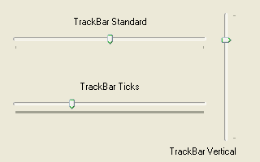

TrackBarGadget()
Syntax
Result = TrackBarGadget(#Gadget, x, y, Width, Height, Minimum, Maximum [, Flags])Description
Creates a TrackBar gadget in the current GadgetList. It allows you to select a range of values with a slide bar, like ones found in several multimedia players.
Parameters
#Gadget A number to identify the new gadget. #PB_Any can be used to auto-generate this number. x, y, Width, Height The position and dimensions of the new gadget. Minimum, Maximum The range of values used by the gadget. These values should be between 0 and 10,000 to avoid limitations on some operating systems. Flags (optional) Flags to modify the gadget behavior. It can be a combination of the following values: #PB_TrackBar_Ticks : Display a 'tick' marker at each step. #PB_TrackBar_Vertical : The trackbar is vertical (instead of horizontal which is the default).
Return value
Returns nonzero on success and zero on failure. If #PB_Any was used as the #Gadget parameter then the return-value is the auto-generated gadget number on success.
Remarks
A 'mini help' can be added to this gadget using GadgetToolTip().
The following functions can be used to act on this gadget:
- GetGadgetState(): Returns the current cursor position (value between the Minimum-Maximum range).
- SetGadgetState(): Change the current cursor position.
- GetGadgetAttribute() with one of the following attributes:#PB_TrackBar_Minimum : Returns the minimum value. #PB_TrackBar_Maximum : Returns the maximum value.- SetGadgetAttribute() with one of the following attributes:#PB_TrackBar_Minimum : Changes the minimum value. #PB_TrackBar_Maximum : Changes the maximum value.
Example
If OpenWindow(0, 0, 0, 320, 200, "TrackBarGadget", #PB_Window_SystemMenu | #PB_Window_ScreenCentered) TextGadget (3, 10, 20, 250, 20,"TrackBar Standard", #PB_Text_Center) TrackBarGadget(0, 10, 40, 250, 20, 0, 10000) SetGadgetState(0, 5000) TextGadget (4, 10, 100, 250, 20, "TrackBar Ticks", #PB_Text_Center) TrackBarGadget(1, 10, 120, 250, 20, 0, 30, #PB_TrackBar_Ticks) SetGadgetState(1, 3000) TextGadget (5, 90, 180, 200, 20, "TrackBar Vertical", #PB_Text_Right) TrackBarGadget(2, 270, 10, 20, 170, 0, 10000, #PB_TrackBar_Vertical) SetGadgetState(2, 8000) Repeat : Until WaitWindowEvent() = #PB_Event_CloseWindow EndIf

See Also
GetGadgetState(), SetGadgetState(), GetGadgetAttribute(), SetGadgetAttribute()
Supported OS
All